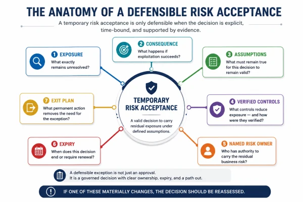
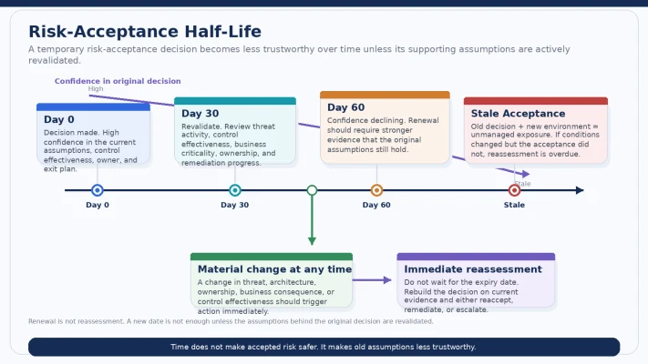

How temporary exceptions become permanent exposure — and the governance test I would use before approving another renewal.
A quick clarification before this one starts.
The word “negligence” is doing deliberate work in the headline because it creates the right tension.
But I am not using it here as a legal conclusion.
This article is about governance failure, stale assumptions, and unreasonable risk handling — whether a decision remains defensible as circumstances change.
That is a different question from legal negligence.
And it is one security leaders should be asking long before lawyers ever need to.
The scenario every security leader has seen some version of
A Critical vulnerability cannot be remediated before the next major release.
Security documents the exposure.
Engineering validates a compensating control.
The business owner accepts the residual risk for 30 days.
That can be a perfectly rational decision.
Thirty days later, the exception is renewed.
Then renewed again.
Six months later:
the service is now internet-facing,
the original business owner has moved roles,
exploitation activity has increased,
and the exception still contains the same sentence:
“Risk accepted.”
At what point did a temporary decision become unmanaged exposure?
That question matters because most risk exceptions do not become dangerous on the day they are created.
They become dangerous gradually.
The environment changes.
The threat changes.
The business changes.
The controls change.
The people change.
But the acceptance decision remains frozen in time.
Risk acceptance is legitimate
I want to say this plainly because an article like this can easily be misread as:
“Risk acceptance is bad.”
It is not.
No enterprise has infinite remediation capacity.
Some vulnerabilities cannot be fixed immediately.
Some changes carry unacceptable operational consequences.
Some technologies depend on vendors.
Some platforms need architectural work before remediation becomes possible.
Risk treatment frameworks recognize that organizations may choose among different responses to risk, including acceptance, based on organizational objectives, constraints, and risk tolerance. NIST SP 800-39 places risk response within an organization-wide risk-management process rather than treating it as a purely technical security activity. [1]
NIST SP 800-30 similarly emphasizes that risk decisions should be informed by threat, vulnerability, likelihood, impact, and organizational context. [2]
So the problem is not that acceptance exists.
The problem is when acceptance stops being treated as an active decision.
My definition is:
Risk acceptance is an explicit, time-bound decision to carry known residual exposure under defined assumptions.
If any part of that sentence disappears — explicit, time-bound, residual exposure, defined assumptions — the quality of the decision starts degrading.
What is actually being accepted?
Executives sometimes say:
“The business accepted the vulnerability.”
I think that language creates confusion.
The business is not accepting a CVE as a technical object.
What it is really accepting is:
the residual enterprise consequence of leaving a known condition unresolved for a defined period, given the controls and assumptions currently in place.
That is a much more demanding statement.
It forces us to ask:
What exactly remains exposed?
What could happen?
What assumptions make this tolerable?
What controls are we relying on?
For how long?
Who has authority to make that call?
A better risk-acceptance statement sounds like:
We are accepting the residual exposure created by leaving this condition unresolved until a defined date, given these controls, this architecture, this threat context, and these business assumptions.
That is not just better wording.
It changes the quality of the decision.
The Acceptance Contract
If residual exposure is what is really being accepted, then every defensible acceptance should contain seven elements.
1. Exposure
What exactly remains unresolved?
Not:
“Critical vulnerability.”
But:
“An externally reachable authentication weakness remains unpatched on Service X.”
Specificity matters.
2. Consequence
What happens if exploitation succeeds?
Customer impact?
Operational disruption?
Data exposure?
Privilege escalation?
Regulatory consequence?
Revenue impact?
Without consequence, the organization is not accepting risk.
It is accepting a technical finding.
3. Assumptions
What must remain true for the decision to stay valid?
For example:
the service remains internal,
no exploitation is observed,
a compensating control remains effective,
the user population remains limited,
a vulnerable feature stays disabled,
the system is retired on schedule.
These assumptions are the foundation of the decision.
4. Verified controls
What are we relying on to reduce exposure?
Segmentation?
WAF rules?
EDR?
Authentication?
Isolation?
Feature disablement?
Restricted privilege?
And just as importantly:
How do we know those controls actually work?
A control named in a spreadsheet is not the same as a control that has been validated against the relevant attack scenario.
5. Named risk owner
Who has authority to carry the residual business consequence?
A person.
A role.
Not:
“Security.”
Not:
“the application team.”
Not:
“the business.”
Someone who actually has the authority to make the decision.
6. Expiry
When does the acceptance end?
Not:
“Review annually.”
A real date.
7. Exit
What permanent action removes the need for the exception?
Patch?
Upgrade?
Architecture change?
Platform replacement?
Retirement?
Vendor remediation?
Funding?
If there is no answer to that question, I would challenge whether the exception is actually temporary.
An exception without an exit plan is not temporary. It is a new operating model.

If one of these materially changes, the decision should be reassessed.
Risk-Acceptance Half-Life
Article 3 introduced this idea briefly.
It deserves a proper definition here.
I use Risk-Acceptance Half-Life as a proposed governance lens.
It is not an industry standard.
It is not a mathematical formula.
It does not mean:
“Every 30 days, confidence falls by 50%.”
The idea is simpler:
The older a risk-acceptance decision becomes, the more evidence leadership should require that the assumptions supporting it are still true.
Why?
Because enterprises change.
Threat actors change.
Architecture changes.
Business criticality changes.
Controls degrade.
Ownership changes.
Remediation options improve.
A decision that was rational three months ago may no longer describe today's risk.
That means confidence in the original decision should decline unless it is actively revalidated.
What should invalidate an acceptance?
Not every exception needs to wait for its expiry date.
Some events should force immediate reassessment.
For example:
the vulnerability enters CISA's Known Exploited Vulnerabilities catalog; [8]
EPSS changes materially, indicating a different exploitation likelihood; [7]
the asset becomes internet-facing;
business criticality increases;
a merger or acquisition changes dependencies;
the service begins handling more sensitive data;
system ownership changes;
a compensating control fails;
the architecture changes;
new attack paths become available;
a patch or other remediation becomes available;
the system's role changes;
or the original expiry date passes.
CVSS v4.0 itself reflects the broader principle that threat and environmental context affect vulnerability assessment beyond a static Base score. [6]
Shimizu and Hashimoto's vulnerability-management chaining work similarly reinforces the value of combining multiple vulnerability and exploitation signals rather than relying on a single static indicator. [9]
The governance implication is straightforward:
When the assumptions expire but the acceptance does not, the enterprise is carrying a new risk under an old decision.
That is where temporary acceptance starts becoming dangerous.

Time does not make accepted risk safer. It makes old assumptions less trustworthy.
Renewal is not reassessment
This may be the most important distinction in the article.
A typical workflow looks like:
Expiry approaching
→
Owner clicks Renew
→
New date generated
→
Exception remains open
That is administration.
It is not governance.
Reassessment means asking the original questions again.
Has threat activity changed?
Has reachability changed?
Are the controls still effective?
Has business consequence changed?
Is the system more critical now?
Is remediation available?
Has the owner changed?
Is the exposure still within organizational risk appetite?
NIST CSF 2.0's GOVERN function reinforces the broader idea that cybersecurity risk management should be tied to organizational context, risk strategy, roles, responsibilities, and ongoing oversight rather than treated as a static technical workflow. [3]
So:
Changing the expiry date is not reassessment. Revalidating the assumptions is.
That sentence alone would improve a lot of exception programs.
Who is actually allowed to accept the risk?
This is where ownership gets uncomfortable.
Four roles contribute different information.
Security
Identifies and explains the exposure.
Engineering / Technology
Explains remediation feasibility and technical controls.
Business / Service Owner
Understands customer, operational, financial, and service consequence.
Authorized Risk Owner
Decides whether the residual exposure is acceptable.
Those are not necessarily the same person.
And they should not be confused.
NIST SP 800-39 explicitly places risk management across organizational, mission/business, and information-system levels. [1]
NIST SP 800-53 also embeds security and privacy control responsibility inside broader organizational governance and accountability structures. [4]
The practical implication is:
The team that discovers the risk should not automatically be the team with authority to accept it.
Security can recommend.
Security can escalate.
Security can disagree.
Security can document.
But if Security becomes the default approver simply because nobody else wants the decision, something has gone wrong.
The business consequence belongs with whoever actually has authority to carry it.
“Risk accepted by business” is not enough
I see this phrase often:
“Business accepted.”
Which business?
Who?
With what authority?
What consequence did they accept?
For how long?
Under what assumptions?
What evidence did they review?
A name in a workflow does not automatically create accountability.
Acceptance authority should be explicit.
For material cyber exposure, leadership should know:
who can accept it,
at what level,
for what magnitude,
for how long,
and when escalation is mandatory.
That is risk governance.
Five signs your exception has stopped being a decision
There are several warning signs I would look for.
1. Nobody can name the current risk owner
The person who approved it left.
Or changed roles.
Or was never actually the owner.
The exception remains.
2. The exception has been repeatedly renewed without revalidating the assumptions
New date.
Same rationale.
No new evidence.
3. The compensating control has never actually been tested
Someone wrote:
“Segmented.”
Nobody verified the relevant path.
4. No funded or scheduled exit exists
The remediation plan says:
“Upgrade in future roadmap.”
That is not an exit plan.
That is hope.
5. The threat or business context changed, but the acceptance did not
Internet exposure changed.
Threat activity changed.
Business criticality changed.
Architecture changed.
Risk decision did not.
I would avoid turning this into a formula like:
“Three of five = negligence.”
That would create false precision.
The better governance rule is:
When several of these conditions appear together, escalate the exposure rather than treating renewal as routine.
Accepted risk can accumulate into exposure debt
One exception may be reasonable.
Two hundred individually reasonable exceptions can create something leadership never consciously chose.
That is another reason exception governance matters.
Risk accumulates.
Especially when several accepted exposures affect:
the same product,
the same identity tier,
the same legacy platform,
the same acquired business,
the same critical dependency,
or the same attack path.
Individually:
manageable.
Collectively:
material.
This is where the vulnerability program should stop asking:
“Is each exception valid?”
and start asking:
“What portfolio of accepted exposure have we allowed to accumulate?”
That is a board-level question.
What I would measure instead of counting exceptions
A dashboard saying:
274 open risk exceptions
tells me almost nothing.
I would rather see:
Exception Age
How long has accepted exposure existed?
Renewal Rate
What percentage of exceptions are being repeatedly extended?
One renewal may be understandable.
Four renewals often indicate something structural.
Exceptions Without an Exit
How many accepted exposures have no funded, scheduled, or technically credible permanent treatment?
Changed-Assumption Exceptions
How many approvals are still active even though one of the original assumptions is no longer true?
Concentrated Accepted Exposure
Where are multiple exceptions accumulating around the same:
business service,
technology platform,
identity layer,
architecture boundary,
vendor,
or business unit?
And I would add a qualitative status:
Acceptance Confidence
CURRENT
Assumptions recently validated.
AGING
Approaching expiry; reassessment required.
STALE
Material assumptions changed or supporting evidence is outdated.
INVALID
The conditions that justified acceptance no longer hold.
This is not meant as another magic score.
It is a governance signal.
What the board should actually see
Not:
274 risk exceptions open.
Instead:
How many material exposures are consciously accepted?
How old are those decisions?
How many have been renewed more than once?
Which have no funded exit?
Which assumptions have changed?
Which accepted exposures are above stated risk appetite?
Which business units are carrying concentrated accepted risk?
What percentage of material accepted exposure is scheduled to exit this quarter?
The board question becomes:
How much of our cyber risk is deliberately accepted, how old is that decision, and what is preventing us from exiting it?
That is much more useful than a count.
The Monday-morning exercise
Pull your ten oldest material risk exceptions.
For each one, ask:
Who is the current risk owner?
Not the original approver.
The current owner.
What assumptions justified the original decision?
Can anyone state them?
Have those assumptions been revalidated?
Or was only the date changed?
What has changed since approval?
Threat?
Reachability?
Architecture?
Business criticality?
Ownership?
Controls?
Is there a funded and scheduled exit?
Or simply another renewal?
If most of those questions cannot be answered cleanly:
you do not have a risk-acceptance program.
You have a queue of decisions nobody is actually re-making.
Where standards help — and where leadership still has to decide
NIST gives us strong foundations.
SP 800-39 gives the organizational risk-governance model. [1]
SP 800-30 gives the risk-assessment discipline. [2]
CSF 2.0 makes governance explicit through the GOVERN function. [3]
SP 800-53 embeds control accountability and continuous assessment into broader security governance. [4]
SP 800-40 reinforces that vulnerability and patch management are forms of preventive maintenance requiring planning and prioritization. [5]
FIRST CVSS and EPSS, together with CISA KEV, provide useful technical and threat signals that can change the relevance of an old risk decision. [6][7][8]
Recent research continues to explore context-aware vulnerability prioritization and risk-management integration. [9][10]
But no framework can answer the hardest enterprise question for you:
Is this residual exposure still worth carrying today?
That decision belongs to the organization.
And it has to be remade when the facts change.
My position
A temporary exception is a decision.
A stale exception is unmanaged debt wearing the paperwork of a decision.
The difference is not how the exception started.
Most of them start reasonably.
The difference is whether anyone is still checking that the reasons remain true.
Time does not make accepted risk safer. It makes old assumptions less trustworthy.
The Security team can explain the exposure.
It should not automatically have — or quietly inherit — the authority to accept the business consequence on behalf of the enterprise.
And the test I would use before approving another renewal is not:
“Has this been open too long?”
It is:
“Do we still know why we said yes — and is it still true?”
If the answer is unclear, the correct action is not:
renew.
It is:
reassess.
Because:
When the assumptions expire but the acceptance does not, the enterprise is carrying a new risk under an old decision.
That is the point where temporary acceptance stops looking like governance.
And starts looking like unmanaged exposure.
Monday-morning takeaway
Take the ten oldest material exceptions in your environment.
Do three things.
Reconstruct the original decision
What exposure was accepted?
What assumptions supported it?
Who accepted it?
Compare that decision with today
What has changed?
Threat?
Architecture?
Controls?
Business consequence?
Ownership?
Demand an exit
Patch.
Upgrade.
Mitigate.
Replace.
Retire.
Or explicitly reaccept the residual exposure under new evidence and a new decision.
Do not let:
“Renewed for another 30 days”
become the organization's substitute for risk management.
Next in the series
The Security Team Does Not Own Your Vulnerabilities
Security discovers the exposure.
Engineering controls the fix.
Product controls the roadmap.
Operations controls the change window.
The business carries the consequence.
So who actually owns the vulnerability?
The next article will examine why vulnerability management breaks when responsibility is distributed but accountability is not.
References
[1] Joint Task Force Transformation Initiative. (2011). Managing Information Security Risk: Organization, Mission, and Information System View. NIST Special Publication 800-39. https://csrc.nist.gov/pubs/sp/800/39/final
[2] National Institute of Standards and Technology. (2012). Guide for Conducting Risk Assessments. NIST Special Publication 800-30 Rev. 1. https://csrc.nist.gov/pubs/sp/800/30/r1/final
[3] National Institute of Standards and Technology. (2024). The NIST Cybersecurity Framework (CSF) 2.0. https://www.nist.gov/cyberframework
[4] Joint Task Force. (2020). Security and Privacy Controls for Information Systems and Organizations. NIST Special Publication 800-53 Rev. 5. https://csrc.nist.gov/pubs/sp/800/53/r5/upd1/final
[5] Souppaya, M., & Scarfone, K. (2022). Guide to Enterprise Patch Management Planning: Preventive Maintenance for Technology. NIST Special Publication 800-40 Rev. 4. https://nvlpubs.nist.gov/nistpubs/SpecialPublications/NIST.SP.800-40r4.pdf
[6] FIRST. Common Vulnerability Scoring System Version 4.0. https://www.first.org/cvss/v4.0/
[7] FIRST. Exploit Prediction Scoring System (EPSS). https://www.first.org/epss/
[8] Cybersecurity and Infrastructure Security Agency. Known Exploited Vulnerabilities Catalog. https://www.cisa.gov/known-exploited-vulnerabilities-catalog
[9] Shimizu, N., & Hashimoto, M. (2026). “Vulnerability Management Chaining: An Integrated Framework for Efficient Cybersecurity Risk Prioritization.” IEEE Access, 14, 31407–31424.
[10] Lubis, M., Luthfi, M. I., Saedudin, R. R., Muttaqin, A. N., & Lubis, A. R. (2026). “The Integration of ISO 27005 and NIST SP 800-30 for Security Operation Center Framework Effectiveness in the Non-Bank Financial Industry.” Computers, 15(1), 60. https://doi.org/10.3390/computers15010060